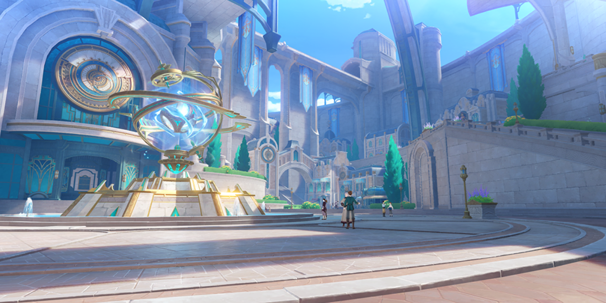

原神とは
原神（Genshin Impact）は、miHoYoが開発したアドベンチャーRPGです。プレイヤーである旅人は「ティワット」という広大な幻想世界を冒険し、個性ある仲間たちとともに立ちはだかる強敵と戦っていくゲームです。
主な特徴
- オープンワールド
崖を登ったり、海を泳いだり、空を飛んだりと進め方は人それぞれ。 - 元素システム
この世界には「風」「岩」「雷」「草」「水」「炎」「氷」の七つの元素が存在する。複数の元素を用いることで蒸発や超電導などの連鎖反応を起こすことができる。
あらすじ
双子の兄妹、蛍と空はこれまでに多くの世界を渡り歩いてきた。 しかし、原神の舞台となる「テイワット」にて謎の神との戦いに敗れ、双子の片割れを連れ去られてしまう。 やがて目が覚めた主人公は、行方不明となった兄妹を探すため、テイワットに存在する7つの国をめぐる旅に出発する。
テイワットを統治する７つの国
-
モンド | 自由の国
元素： 風
統治している神： バルバトス -
璃月 | 契約の国
元素： 岩
統治している神： モラクス -
稲妻 | 永遠の国
元素： 雷
統治している神： バアルゼブル -
スメール | 知恵の国
元素： 草
統治している神： クラクサナリデビ -
フォンテーヌ | 正義の国
元素： 水
統治している神： フォカロルス -
ナタ | 戦争の国
元素： 炎
統治している神： 不明 -
スネージナヤ | 反逆の国
元素： 氷
統治している神： 不明
どんな人にオススメ？
原神は以下のような人におすすめです：
- 美しいグラフィックや景観を楽しみたい人
- 自分のスタイルで探索するのが好きな人
- 多種多様なキャラクターを育成するのが好きな人
- 友達やほかのプレイヤーと協力してプレイしたい人
その他
ストーリーは今もなお制作が続いており、今年の夏には炎の国「ナタ」が実装予定。